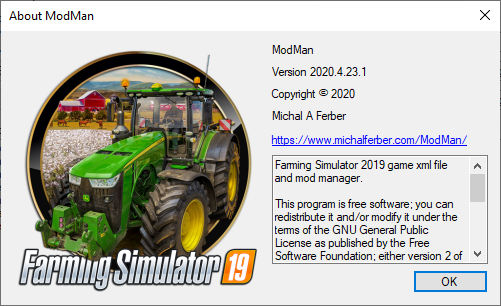
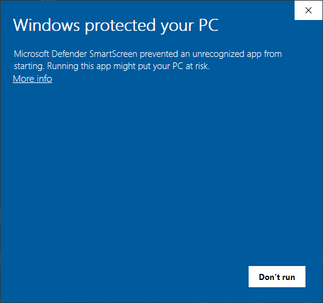
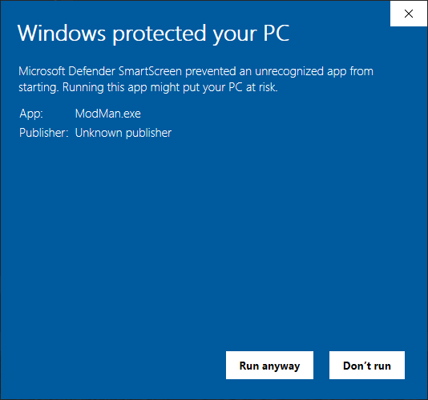
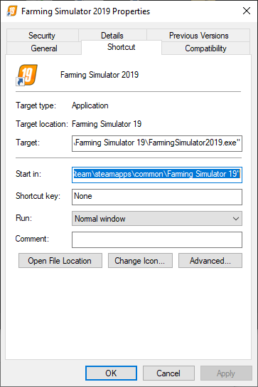
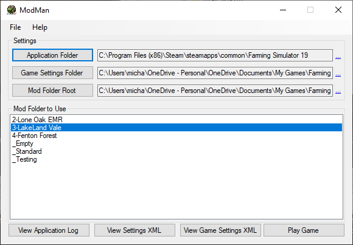
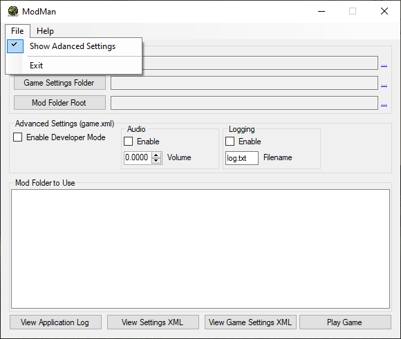
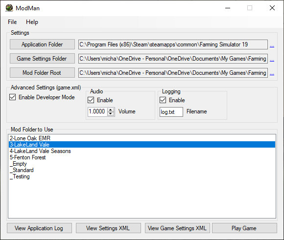

ModMan — User Guide
Latest build: v2020.04.23.0001 · GitHub

Installation
Unzip the downloaded file and place the file wherever you desire — for example,
C:\Program Files (x86)\ModMan. Create a desktop shortcut if you want.
The first time you run the program, you may see a blue Windows Defender SmartScreen
prompt. Click the More info link.

Then click the Run anyway button. You should only see this prompt on first launch.

Setting It Up
You need to define three folders before the program will work properly.
Application Folder
If you run FS19 through Steam, the default installation path is:
C:\Program Files (x86)\Steam\steamapps\common\Farming Simulator 19Select that path or wherever FS19 is installed. If you're unsure, right-click the FS19 launch icon → Properties — the Start in path is what you want.

Game Settings Folder
The settings folder is the location of game.xml and gamesettings.xml:
C:\Users\YourNameHere\Documents\My Games\FarmingSimulator2019\Mod Folder Root
The root folder containing all of your different mod folders. If you've never separated mods before, this folder will need to be created. ModMan's author puts separate mod folders in the default FS19 mod folder location:
C:\Users\YourNameHere\Documents\My Games\FarmingSimulator2019\mods\
Advanced Settings

Developer Mode
Enables the developer console in-game — lets you type commands. Reference for FS19 dev console commands: yekbot.com/farming-simulator-19-console-commands-developer-console.
Audio
Toggle audio on/off and set volume as a decimal percentage:
1.0000 = 100%
0.7000 = 70%Logging
Toggle logging on/off and change the log filename. Game default: logging enabled,
filename log.txt.
